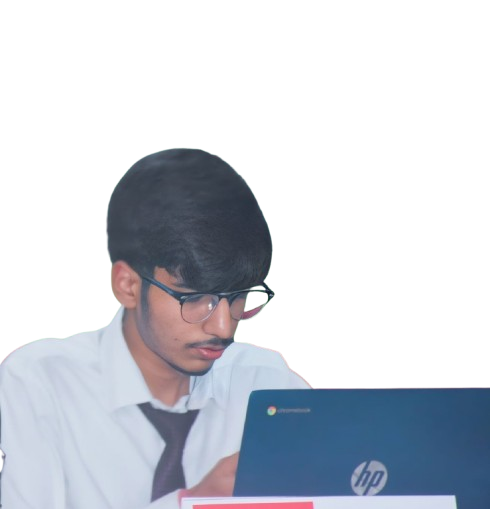
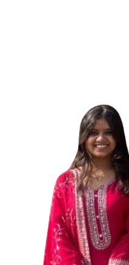
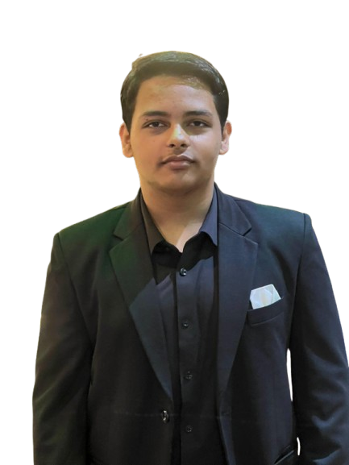
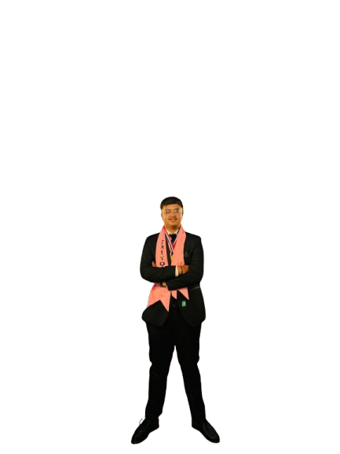

We don't just teach concepts—we build confidence. Through interactive experiences and thoughtfully crafted content, we guide our learners to explore the unseen layers of cyberspace. Our goal is to equip every user with the clarity, courage, and competence to stand strong in an ever-evolving technological world. Because the future belongs to those who are not just connected, but cyber-wise.

Aayush Gupta played an essential role in building all parts of the website. His strong grasp of coding helped guide the whole team, and he often shared insights that shaped how the pages came together. His knowledge and willingness to teach made a big difference.

Swikriti worked on building the content for the MCS platform, as well as creating the contact page. She also helped in designing key parts of the site, blending both function and creativity to support a seamless user experience throughout the project.

Aayush Adhikari was the mind behind many of the site’s core ideas and designs. He led the creation of the quiz, cybersecurity sections, and features page, shaping both functionality and design with thoughtful planning and strong development skills.
Rose contributed heavily to the visual direction of the website, helping shape its overall design and concept. She also managed documentation, tracked progress consistently, and motivated the team, playing a vital role in keeping things moving forward.

Arush helped kick off the project by designing the initial wireframes. His early contributions gave the team a clear visual direction and helped everyone understand how the final website would look and function before development began.